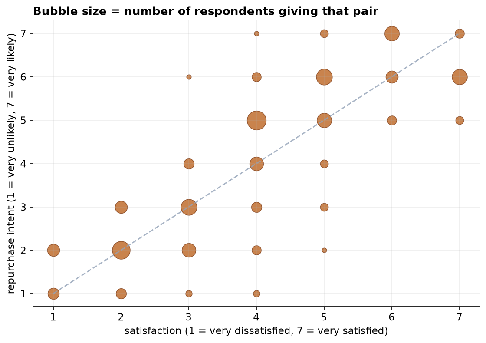
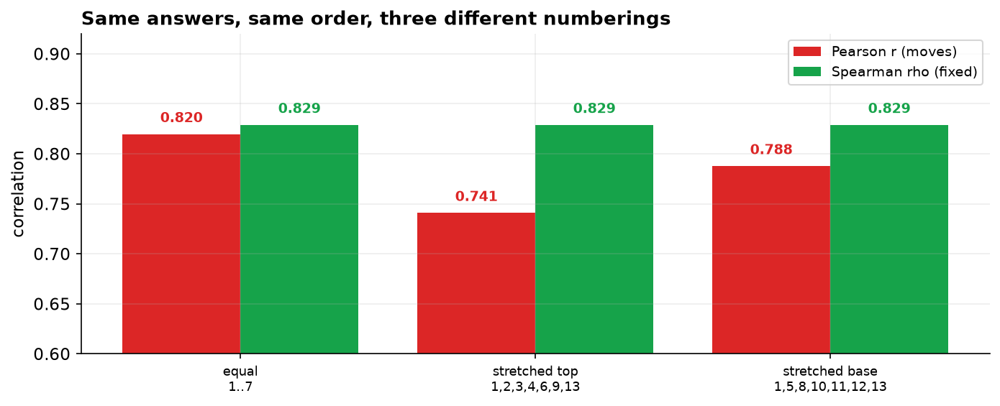

The last capstone correlated two genuine measurements: hours and scores. This one correlates two opinions recorded as numbers. A 6 really is more satisfied than a 4, but nothing says the step from 4 to 5 is the same size as the step from 6 to 7. That single fact changes which method is defensible.
Satisfaction and repurchase intent are strongly associated (ρ = 0.83, p < 0.001, n = 182). Pearson's r gives a similar 0.82 here, which invites the question of why the rank method matters. The answer: renumber the same ordered answers and Pearson moves to 0.74 while Spearman stays at 0.83.
The Instrument, and What Its Numbers Mean
A customer survey asked two questions on 7-point scales, plus tenure. The business question is whether satisfaction actually tracks loyalty, or whether happy customers leave anyway.
The answers arrive as the numbers 1 to 7, and those numbers are genuinely ordered. But nothing guarantees the spacing is equal. Is the gap between "very dissatisfied" and "dissatisfied" the same size as the gap between "satisfied" and "very satisfied"? Nobody knows, and the survey never established it. The numbers are labels of order, not measured quantities, which makes these variables ordinal rather than continuous.
A Grid, Not a Cloud
Cleaning removed two duplicates, two blanks, and one impossible code of 9, leaving 182 responses. Ordinal data does not scatter like continuous data: with only 7 × 7 possible answers, hundreds of people land on the same points, so an ordinary scatterplot would hide most of them behind each other. Sizing each point by how many respondents chose that pair fixes it.

The Result
Satisfaction and repurchase intent are strongly and monotonically associated. Kendall's tau of 0.71 is lower than rho, which is normal rather than a disagreement: tau counts concordant against discordant pairs and typically runs below rho on the same data.
Which raises the obvious objection. Pearson's r is 0.82, almost identical to Spearman's 0.83. If they agree, why insist on the rank method?
Because They Are Not Equally Trustworthy
The numbers 1 to 7 are a convention chosen by whoever designed the form. Suppose the same survey had been coded with different numbers that preserve exactly the same order. Every respondent said exactly the same thing; only the labels changed. Watch what each coefficient does.
| Coding of the same ordered answers | Pearson r | Spearman ρ |
|---|---|---|
Equal spacing 1, 2, 3, 4, 5, 6, 7 | 0.820 | 0.829 |
Stretched at the top 1, 2, 3, 4, 6, 9, 13 | 0.741 | 0.829 |
Stretched at the base 1, 5, 8, 10, 11, 12, 13 | 0.788 | 0.829 |

Pearson believes the numbers; Spearman believes only the order. Pearson inherits whatever arbitrary spacing the survey designer happened to choose, so its value depends on a decision nobody had grounds to make. Spearman uses only the ranking, which is the one thing a Likert scale genuinely establishes. The rank method is right here not because it gives a different answer, but because its answer does not rest on an unfounded assumption.
Ties Are Not a Problem, They Are the Design
With 182 respondents spread over just seven possible answers, enormous numbers of people share the same value. That is not a defect in the data; it is the inevitable arithmetic of a short scale.
| Satisfaction level | 1 | 2 | 3 | 4 | 5 | 6 | 7 |
|---|---|---|---|---|---|---|---|
| Respondents | 13 | 27 | 29 | 42 | 32 | 21 | 18 |
Rank methods are built to handle this: each tied block receives the average rank within it, which is
what scipy does automatically. It is worth knowing that Kendall's tau-b carries an
explicit tie correction and is sometimes preferred on short scales for that reason, though here rho and tau lead to
the same conclusion.
The Verdict, and What Was Actually Measured
Satisfaction and stated repurchase intent move together strongly. For the business this supports treating satisfaction as a leading indicator of retention, with two caveats that materially qualify it.
- Both variables are stated intentions, not behaviour. We measured what customers say they will do. The gap between stated intent and actual repurchase is well documented and often large. This analysis establishes that two survey answers agree with each other, which is a weaker claim than establishing that satisfaction predicts revenue.
- Common-method bias inflates the association. Both answers came from the same person, on the same form, moments apart. Someone in a good mood marks both scales high. Part of ρ = 0.83 is very likely the respondent's general disposition rather than a genuine satisfaction-to-loyalty link. Linking survey answers to observed repurchase would be the far stronger study.
- Who answered? Survey respondents are self-selected, and people with strong feelings answer more readily, so the middle of the distribution is probably under-represented.
- Do not average Likert scores casually. The reasoning that sent us to Spearman applies just as much to reporting "average satisfaction of 4.6": that number assumes exactly the equal spacing the scale does not provide. Medians and full response distributions are the safer summaries.
Rank Methods in Data Science & AI
Ordinal data is everywhere once you start looking, and so is the temptation to treat it as continuous.
| Where it appears | The ordinal variables |
|---|---|
| Survey and NPS analytics | Any Likert battery, satisfaction scale, or rating question. |
| Ranking and search evaluation | Predicted ranking against human relevance judgments. |
| Model-vs-human agreement | An LLM's graded judgments against a rater's, both on ordered scales. |
| Robust feature screening | Spearman instead of Pearson when a predictor is skewed or has outliers. |
Rank correlation is the standard tool for evaluating ranking systems, because what matters is the order the system produces rather than the raw scores behind it. It is also the safe default for feature screening: Spearman detects any monotonic relationship, including curved ones that Pearson understates, and it is far less disturbed by the kind of extreme value that moved r by 0.19 in Capstone 11. When in doubt on messy data, compute both and investigate any gap between them.
The full project, step by step
The companion notebook prints the instrument from the workbook, cleans the responses with a printed audit trail, draws the bubble grid that ordinal data needs, computes Spearman's rho, Kendall's tau, and Pearson's r for comparison, then re-codes the same ordered answers three different ways to show which coefficient survives and which does not. It closes with the tie structure and why rank methods handle it. Every number here comes from its output, with a plain-language note after each result.
The dataset (capstone-satisfaction-and-loyalty.xlsx) holds
the responses on the survey sheet plus the full Questionnaire sheet, with duplicates, blanks, and
an out-of-range Likert code left in so you can practice the cleaning. Two written reports accompany it: a
plain-language brief for a customer-experience lead, and a technical report with
the measurement argument, the re-coding demonstration, and references.
🎓 Key Takeaways
- ✓Likert numbers are labels of order, not measurements: the scale establishes ranking, never equal spacing.
- ✓Spearman tests for a monotonic relationship, not a linear one, so it never has to assume the scale is straight.
- ✓The decisive demonstration: renumber the same ordered answers and Pearson moves (0.820, 0.741, 0.788) while Spearman stays fixed at 0.829.
- ✓Ties are the design, not a defect: 182 people on 7 levels tie constantly, and rank methods assign midranks; Kendall's tau-b corrects for them explicitly.
- ✓Watch what was measured: both variables are stated intentions from the same form, so common-method bias inflates ρ = 0.83. Linking to observed repurchase would be far stronger.
Quiz: Test Yourself
Eight questions on this capstone, from ordinal measurement to common-method bias. Answer them, hit Check Answers, and keep refining until you score 100%. Your progress is saved.